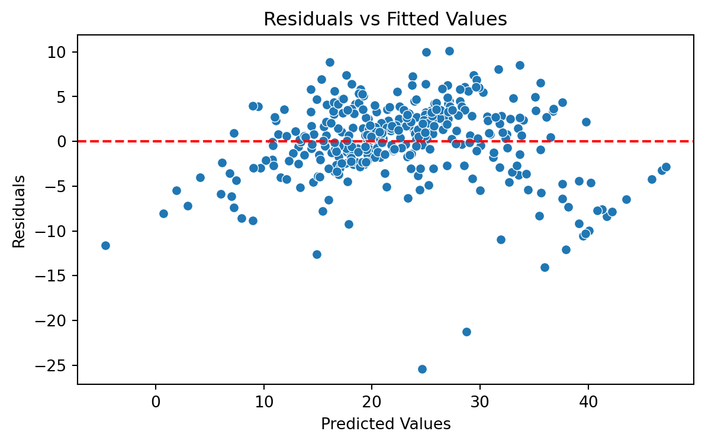

# Importing necessary libraries
import pandas as pd
import seaborn as sns
import matplotlib.pyplot as plt
import statsmodels.api as sm
from sklearn.linear_model import LinearRegression
from sklearn.preprocessing import StandardScaler
from sklearn.model_selection import train_test_split
from sklearn.metrics import root_mean_squared_errorAdditional Topics
IN5148: Statistics and Data Science with Applications in Engineering
Agenda
- Linear Models with Categorical Predictors
- Linear Models with Standardized Numerical Predictors
- Putting All Together
Load the libraries
Let’s import scikit-learn into Python together with the other relevant libraries.
We will not use all the functions from the scikit-learn library. Instead, we will use specific functions from the sub-libraries preprocessing, model_selection, and metrics.
Linear Models with Categorical Predictors
Categorical predictors
- A categorical predictor takes on values that are categories, say, names or labels.
- Their use in regression requires dummy variables, which are quantitative variables.
- When a categorical predictor has more than two levels, a single dummy variable cannot represent all possible categories.
- In general, a categorical predictor with \(k\) categories requires \(k-1\) dummy variables.
Dummy coding
Traditionally, dummy variables are binary variables which can only take the values 0 and 1.
This approach implies a reference category. Specifically, the category that results when all dummy variables equal 0.
This coding impacts the interpretation of the model coefficients:
- \(\beta_0\) is the mean response under the reference category.
- \(\beta_j\) is the amount of increase in the mean response when we change from the reference category to another category.
Example 1
The auto data set includes a categorical variable “Origin” which shows the origin of each car.
# Load the Excel file into a pandas DataFrame.
auto_data = pd.read_excel("auto.xlsx")
# Set categorical variables.
auto_data['origin'] = pd.Categorical(auto_data['origin'])In this section, we will consider the auto_data as our training dataset.
Dataset
(auto_data
.filter(['mpg', 'origin'])
).head(6)| mpg | origin | |
|---|---|---|
| 0 | 18.0 | American |
| 1 | 15.0 | American |
| 2 | 18.0 | American |
| 3 | 16.0 | American |
| 4 | 17.0 | American |
| 5 | 15.0 | American |
Dummy variables
Origin has 3 categories: European, American, Japanese.
So, 2 dummy variables are required:
\[d_1 = \begin{cases} 1 \text{ if car is European}\\ 0 \text{ if car is not European} \end{cases} \text{ and }\]
\[d_2 = \begin{cases} 1 \text{ if car is Japanese}\\ 0 \text{ if car is not Japanese} \end{cases}.\]
“American” acts as the reference category.
The dataset with the dummy variables looks like this:
| origin | \(d_1\) | \(d_2\) |
|---|---|---|
| American | 0 | 0 |
| American | 0 | 0 |
| European | 1 | 0 |
| European | 1 | 0 |
| American | 0 | 0 |
| Japanese | 0 | 1 |
| \(\vdots\) | \(\vdots\) | \(\vdots\) |
Linear regression model
\[\hat{Y}_i= \hat{\beta}_0 + \hat{\beta}_1 d_{1i} + \hat{\beta}_2 d_{2i} \ \text{for} \ i=1,\ldots,n.\]
- \(\hat{Y}_i\) is the i-th predicted response.
- \(d_{1i}\) is 1 if the i-th observation is from a European car, and 0 otherwise.
- \(d_{2i}\) is 1 if the i-th observation is from a Japanese car, and 0 otherwise.
Model coefficients
\[ \hat{Y}_i= \hat{\beta}_0 + \hat{\beta}_1 d_{1i} + \hat{\beta}_2 d_{2i} \]
- \(\hat{\beta}_0\) is the mean response (mpg) for American cars.
- \(\hat{\beta}_1\) is the amount of increase in the mean response when changing from an American to a European car.
- \(\hat{\beta}_2\) is the amount of increase in the mean response when changing from an American to a Japanese car.
Alternatively, we can write the regression model as:
\[ \hat{Y}_i= \hat{\beta}_0+\hat{\beta}_1 d_{1i} +\hat{\beta}_2 d_{2i} = \begin{cases} \hat{\beta}_0+\hat{\beta}_1 +\hat{\beta}_i \text{ if car is European}\\ \hat{\beta}_0+\hat{\beta}_2 \text{ if car is Japanese} \\ \hat{\beta}_0 \;\;\;\;\;\;\ \text{ if car is American} \end{cases} \]
Given this model representation:
- \(\hat{\beta}_0\) is the mean mpg for American cars,
- \(\hat{\beta}_1\) is the difference in the mean mpg between European and American cars, and
- \(\hat{\beta}_2\) is the difference in the mean mpg between Japanese and American cars.
In Python
We follow three steps to fit a linear model with a categorical predictor. First, we compute the dummy variables.
# Create linear regression object
dummy_X_train = pd.get_dummies(auto_data['origin'], drop_first = True,
dtype = 'int')Next, we construct the response column.
# Create response vector
Y_train = auto_data['mpg']Finally, we fit the model using scikit-learn.
# 1. Create the linear regression model
LRmodel = LinearRegression()
# 2. Fit the model.
LRmodel.fit(dummy_X_train, Y_train)
# 3. Show estimated coefficients.
print("Intercept:", LRmodel.intercept_)
print("Coefficients:", LRmodel.coef_)Intercept: 20.033469387755094
Coefficients: [ 7.56947179 10.41716352]Analysis of covariance
Models that mix categorical and numerical predictors are sometimes referred to as analysis of covariance (ANCOVA) models.
Example (cont): Consider the predictor weight (\(X\)).
\[\hat{Y}_i= \hat{\beta}_0 + \hat{\beta}_1 d_{1i} + \hat{\beta}_2 d_{2i} + \hat{\beta}_3 X_{i},\]
where \(X_i\) denotes the i-th observed value of weight and \(\hat{\beta}_3\) is the coefficient of this predictor.
ANCOVA model
The components of the ANCOVA model are individual functions of the coefficients.
To gain insight into the model, we write it as follows:
\[ \begin{align} \hat{Y}_i &= \hat{\beta}_0+\hat{\beta}_1 d_{1i} +\hat{\beta}_2 d_{2i} + \hat{\beta}_3 X_{i} \\ &= \begin{cases} (\hat{\beta}_0+\hat{\beta}_1) + \hat{\beta}_3 X_{i} & \text{ if car is European} \\ (\hat{\beta}_0+\hat{\beta}_2) + \hat{\beta}_3 X_{i} & \text{ if car is Japanese} \\ \hat{\beta}_0 + \hat{\beta}_3 X_{i} \;\;\;\;\;\;\;\;\ & \text{ if car is American} \\ \end{cases}. \end{align} \]
The models have different intercepts but the same slope.
- To estimate \(\hat{\beta}_0\), \(\hat{\beta}_1\), \(\hat{\beta}_2\) and \(\hat{\beta}_3\), we use least squares.
- We could make individual inferences on \(\beta_1\) and \(\beta_2\) using t-tests in the statsmodels library.
- However, better tests are possible such as overall and partial F-tests (not discussed here).
In Python
To fit an ANCOVA model, we use similar steps as before. The only extra step is to concatenate the data with the dummy variables and the numerical predictor using the function concat() from pandas.
# Concatenate the two data sets.
X_train = pd.concat([dummy_X_train, auto_data['weight']], axis = 1)
# 1. Create the linear regression model
LRmodel_ancova = LinearRegression()
# 2. Fit the model.
LRmodel_ancova.fit(X_train, Y_train)
# 3. Show estimated coefficients.
print("Intercept:", LRmodel_ancova.intercept_)
print("Coefficients:", LRmodel_ancova.coef_)Linear Models with Standardized Numerical Predictors
Standardization
Standardization refers to centering and scaling each numeric predictor individually.
To center a predictor variable, the average predictor value is subtracted from all the values.
To scale a predictor, each of its value is divided by its standard deviation.
In mathematical terms, we standardize a predictor \(X\) as:
\[{\color{blue} \tilde{X}_{i}} = \frac{{ X_{i} - \bar{X}}}{ \sqrt{\frac{1}{n -1} \sum_{i=1}^{n} (X_{i} - \bar{X})^2 }} \text{ with } \bar{X} = \sum_{i=1}^n \frac{X_i}{n}.\]
The average value of \(\tilde{X}\) is 0.
The standard deviation of \(\tilde{X}\) is 1.
Benefits and limitations
Benefits:
- All quantitative predictors are on the same scale.
- Size and importance of linear regression coefficients can be compared easily.
. . .
Limitations:
- The interpretation of the coefficients is affected.
Interpretation
\[\hat{Y} = \hat{\beta}_0 + \hat{\beta}_1 \tilde{X}_1 + \hat{\beta}_2 \tilde{X}_2 + \cdots + \hat{\beta}_p \tilde{X}_p,\]
where \(\tilde{X}_i\) is the standardized version of the predictor \(X_i\).
Interpretation:
- \(\hat{\beta}_0\) is the average response when all original predictors \(X_1, X_2, \ldots, X_p\) are set to their average value.
- \(\hat{\beta}_j\) is the amount of increase in the average response by an increase of 1 standard deviation in the original predictor \(X_j,\) when all other predictors are fixed to an arbitrary value.
Example 2
The yield of a chemical process (\(Y\)) is related to the concentration of the reactant (\(X_1\)) and the operating temperature (\(X_2\)).
An experiment was conducted to study the effect between these factors on the yield.
The training dataset is in the file “catalyst.xlsx”.
The units of concentration and temperature are percentages and Farenheit degrees, respectively.
catalyst_data = pd.read_excel("catalyst.xlsx")
catalyst_data| Order | Yield | Concentration | Temperature | |
|---|---|---|---|---|
| 0 | 1 | 90 | 2 | 180 |
| 1 | 2 | 91 | 2 | 180 |
| 2 | 3 | 84 | 2 | 150 |
| 3 | 4 | 89 | 1 | 180 |
| 4 | 5 | 83 | 2 | 150 |
| 5 | 6 | 79 | 1 | 150 |
| 6 | 7 | 81 | 1 | 150 |
| 7 | 8 | 87 | 1 | 180 |
Standarization in Python
Recall that we standardize numerical predictors using the scaler() function from scikit-learn.
# Select predictor matrix.
predictor_data = (catalyst_data
.filter(['Concentration', 'Temperature'])
)
# Define the scaling operator.
scaler = StandardScaler()
# Apply the scaling operator.
Xs_training = scaler.fit_transform(predictor_data)Now the predictors are on the same scale
Code
Xs_training = pd.DataFrame(Xs_training, columns = predictor_data.columns)
Xs_training | Concentration | Temperature | |
|---|---|---|
| 0 | 1.0 | 1.0 |
| 1 | 1.0 | 1.0 |
| 2 | 1.0 | -1.0 |
| 3 | -1.0 | 1.0 |
| 4 | 1.0 | -1.0 |
| 5 | -1.0 | -1.0 |
| 6 | -1.0 | -1.0 |
| 7 | -1.0 | 1.0 |
To fit the model, we follow the same functions as before.
# 0. Set the response.
Yc = catalyst_data['Yield']
# 1. Create the linear regression model
Linear_model_sd = LinearRegression()
# 2. Fit the model.
Linear_model_sd.fit(Xs_training, Yc)
# 3. Show estimated coefficients.
print("Intercept:", Linear_model_sd.intercept_)
print("Coefficients:", Linear_model_sd.coef_)Intercept: 85.5
Coefficients: [1.5 3.75]Discussion
Standardization of predictors has no impact on the overall quality of the linear regression model.
- Predictions are identical.
- Residuals do not change.
. . .
Standardization does not affect the correlation between two predictors. So, it has not effect on collinearity.
. . .
Ideally, the dummy variables for the categorical predictors are standardized too.
Putting All Together
Example 3
The “BostonHousing.xlsx” contains data collected by the US Bureau of the Census concerning housing in the area of Boston, Massachusetts. The dataset includes data on 506 census housing tracts in the Boston area in 1970s.
The goal is to predict the median house price in new tracts based on information such as crime rate, pollution, and number of rooms.
The response is the median value of owner-occupied homes in $1000s, contained in the column MEDV.
The predictors
CRIM: per capita crime rate by town.ZN: proportion of residential land zoned for lots over 25,000 sq.ft.INDUS: proportion of non-retail business acres per town.CHAS: Charles River dummy variable (= 1 if tract bounds river; 0 otherwise).NOX: nitrogen oxides concentration (parts per 10 million).RM: average number of rooms per dwelling.AGE: proportion of owner-occupied units built prior to 1940.DIS: weighted mean of distances to five Boston employment centersRAD: index of accessibility to radial highways.TAX: full-value property-tax rate per $10,000.PTRATIO: pupil-teacher ratio by town.LSTAT: lower status of the population (percent).
Read the dataset
We read the dataset and set the variable CHAS as categorical.
# Load Excel file (make sure the file is in your Colab)
Boston_data = pd.read_excel('BostonHousing.xlsx')
# Drop the categorical variable.
Boston_data['CHAS'] = pd.Categorical(Boston_data['CHAS'])
Boston_data['RAD'] = pd.Categorical(Boston_data['RAD'])
# Preview the dataset.
Boston_data.head(3)| CRIM | ZN | INDUS | CHAS | NOX | RM | AGE | DIS | RAD | TAX | PTRATIO | LSTAT | MEDV | |
|---|---|---|---|---|---|---|---|---|---|---|---|---|---|
| 0 | 0.00632 | 18.0 | 2.31 | No | 0.538 | 6.575 | 65.2 | 4.0900 | Low | 296 | 15.3 | 4.98 | 24.0 |
| 1 | 0.02731 | 0.0 | 7.07 | No | 0.469 | 6.421 | 78.9 | 4.9671 | Low | 242 | 17.8 | 9.14 | 21.6 |
| 2 | 0.02729 | 0.0 | 7.07 | No | 0.469 | 7.185 | 61.1 | 4.9671 | Low | 242 | 17.8 | 4.03 | 34.7 |
Train and validation data
We split the dataset into a training and a validation dataset using the function train_test_split() from scikit-learn.
# Set full matrix of predictors.
X_full = Boston_data.drop(columns = ['MEDV'])
# Set full matrix of responses.
Y_full = Boston_data['MEDV']
# Split the dataset into training and validation.
X_train, X_valid, Y_train, Y_valid = train_test_split(X_full, Y_full,
test_size=0.3,
random_state = 59227)The parameter test_size sets the portion of the dataset that will go to the validation set. It is usually 0.3 or 0.2.
Transform the categorical predictors
Before we continue, let’s turn the categorical predictors into dummy variables
# Transform categorical predictors into dummy variables
Boston_X_train = pd.get_dummies(X_train, drop_first = True, dtype = 'int')
Boston_X_train.head(3)| CRIM | ZN | INDUS | NOX | RM | AGE | DIS | TAX | PTRATIO | LSTAT | CHAS_Yes | RAD_Low | RAD_Medium | |
|---|---|---|---|---|---|---|---|---|---|---|---|---|---|
| 452 | 5.09017 | 0.0 | 18.10 | 0.713 | 6.297 | 91.8 | 2.3682 | 666 | 20.2 | 17.27 | 0 | 0 | 0 |
| 317 | 0.24522 | 0.0 | 9.90 | 0.544 | 5.782 | 71.7 | 4.0317 | 304 | 18.4 | 15.94 | 0 | 0 | 1 |
| 352 | 0.07244 | 60.0 | 1.69 | 0.411 | 5.884 | 18.5 | 10.7103 | 411 | 18.3 | 7.79 | 0 | 0 | 1 |
Fit a model using training data
We train a linear regression model to predict the MEDV in terms of the 12 predictors using functions from scikit-learn.
# 1. Create the linear regression model
LRmodel = LinearRegression()
# 2. Fit the model.
LRmodel.fit(Boston_X_train, Y_train)
# 3. Show estimated coefficients.
print("Intercept:", LRmodel.intercept_)
print("Coefficients:", LRmodel.coef_)Intercept: 37.516763561108434
Coefficients: [-5.31702151e-02 4.42408175e-02 8.46402739e-02 -1.19782458e+01
3.82114415e+00 1.77709868e-02 -1.25752076e+00 -7.33041781e-03
-9.14794029e-01 -7.17544266e-01 5.25221827e+00 -2.04793579e+00
-2.47739812e+00]Brief Residual Analysis
We evaluate the model using a “Residual versus Fitted Values” plot. The plot does not show concerning patterns in the residuals. So, we assume that the model satisfies the assumption of constant variance.

Validation Mean Squared Error
When the response is numeric, the most common evaluation metric is the validation Root Mean Squared Error (RMSE):
\[ \left(\frac{1}{n_{v}} \sum_{i=1}^{n_{v}} \left( Y_i - \hat{Y}_i \right)^2 \right)^{1/2} \]
where \((Y_1, \boldsymbol{X}_1), \ldots, (Y_{n_{v} }, \boldsymbol{X}_{n_{v}} )\) are the \(n_{v}\) observations in the validation dataset, and \(\hat{Y}_i = \hat{\beta}_0 + \hat{\beta}_1 X_{i1} + \hat{\beta}_2 X_{i2} + \cdots + \hat{\beta}_p X_{ip}\) is the model prediction of the i-th response.
Recall that …
- The RMSE is in the same units as the response.
- The RMSE value is interpreted as either how far (on average) the residuals are from zero.
- It can also be interpreted as the average distance between the observed response values and the model predictions.
In Python
We first compute the predictions of our model on the validation dataset. To this end, we create the dummy variables of the categorical variables using the validation dataset.
Boston_X_val = pd.get_dummies(X_valid, drop_first = True, dtype = 'int')
Boston_X_val.head(3)| CRIM | ZN | INDUS | NOX | RM | AGE | DIS | TAX | PTRATIO | LSTAT | CHAS_Yes | RAD_Low | RAD_Medium | |
|---|---|---|---|---|---|---|---|---|---|---|---|---|---|
| 482 | 5.73116 | 0.0 | 18.1 | 0.532 | 7.061 | 77.0 | 3.4106 | 666 | 20.2 | 7.01 | 0 | 0 | 0 |
| 367 | 13.52220 | 0.0 | 18.1 | 0.631 | 3.863 | 100.0 | 1.5106 | 666 | 20.2 | 13.33 | 0 | 0 | 0 |
| 454 | 9.51363 | 0.0 | 18.1 | 0.713 | 6.728 | 94.1 | 2.4961 | 666 | 20.2 | 18.71 | 0 | 0 | 0 |
Now, we use the values of the predictors in this dataset and use it as input to our model. Our model then computes the prediction of the response for each combination of values of the predictors.
# Predict responses using validation data.
predicted_medv_val = LRmodel.predict(Boston_X_val)We compute the validation RMSE using scikit-learn.
rmse = root_mean_squared_error(Y_valid, predicted_medv_val)
print( round(rmse, 3) )6.02The lower the validation RMSE, the more accurate our model.
Interpretation: On average, our predictions are off by \(\pm\) 5,981 dollars.